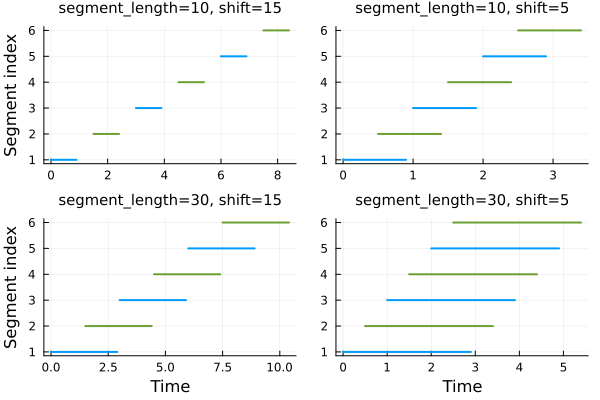

Data Loading with SegmentedTimeSeries
This tutorial demonstrates the SegmentedTimeSeries data loader for batching and segmentation of time series data.
Basic usage
Create synthetic time series data for demonstration:
tsteps = 0.0:0.1:20.0
data = randn(2, length(tsteps))2×201 Matrix{Float64}:
0.141534 0.977641 -1.79457 0.589284 … 1.35104 0.192264 1.2763
4
0.430989 -0.855794 0.313871 -1.01848 -1.38138 -0.778122 -1.5833
2Create a SegmentedTimeSeries dataloader:
segment_length = 20
dataloader = SegmentedTimeSeries((data, tsteps);
segment_length)SegmentedTimeSeries
Time series length: 201
Segment length: 20
Shift: 19 (5.0% overlap)
Batch size: 1
Total segments: 10
Total batches: 10Key parameters:
segment_length: Number of time points per segmentshift: Step size between segments (default:segment_length)batchsize: Number of segments per batch
The dataloader accepts tuples of arrays where the last dimension represents time:
other_data = randn(size(data))
shift = 10
dataloader = SegmentedTimeSeries((data, other_data, tsteps);
segment_length,
shift,
batchsize = 2)
for (i, (segment_data, segment_other_data, segment_times)) in enumerate(dataloader)
i > 3 && break
println("Segment $i: time range $(segment_times[1]) to $(segment_times[end])")
endSegment 1: time range 0.0 to 2.9
Segment 2: time range 2.0 to 4.9
Segment 3: time range 4.0 to 6.9Segmentation strategies
The following visualization shows how segment_length and shift parameters affect data segmentation:
::warning file=examples/data_loading.jmd,line=9::Assignment to `dataloader`
in soft scope is ambiguous because a global variable by the same name exis
ts: `dataloader` will be treated as a new local. Disambiguate by using `loc
al dataloader` to suppress this warning or `global dataloader` to assign to
the existing global variable.
Smaller shift values create more overlap between segments, while larger segment_length values capture longer temporal dependencies.
Tokenization
Tokenization enables indexed access to individual segments, useful for associating segments with specific initial conditions or metadata:
tokenized_dataloader = tokenize(dataloader)
# Get available tokens
tokens_list = collect(tokens(tokenized_dataloader))
# Access specific segment
token = tokens_list[1]
segment_data, segment_times = tokenized_dataloader[token]([0.14153364316907432 0.9776408919242243 … 0.9623542400013447 0.54923092890
65532; 0.430989202192218 -0.8557943989060981 … -0.7033600102772544 2.295646
55760795], [0.5500027137937752 1.7081468196693363 … 0.8430845084336508 1.02
7570473613944; -0.9092831566118649 0.5709422403622328 … -0.3395249652003125
-0.22883724605377836], [0.0, 0.1, 0.2, 0.3, 0.4, 0.5, 0.6, 0.7, 0.8, 0.9,
1.0, 1.1, 1.2, 1.3, 1.4, 1.5, 1.6, 1.7, 1.8, 1.9])Shuffling and partial segments
By default, segments are processed in deterministic order:
for (i, (tok, _)) in enumerate(tokenize(dataloader))
i > 5 && break
println("Batch $i contains tokens: ", tok)
endBatch 1 contains tokens: [1, 2]
Batch 2 contains tokens: [3, 4]
Batch 3 contains tokens: [5, 6]
Batch 4 contains tokens: [7, 8]
Batch 5 contains tokens: [9, 10]Enable shuffling for randomized training:
rng = Random.MersenneTwister(42)
dataloader_shuffled = SegmentedTimeSeries((data, tsteps);
segment_length,
shift,
shuffle = true,
rng = rng)
for (i, (tok, _)) in enumerate(tokenize(dataloader_shuffled))
i > 5 && break
println("Batch $i contains tokens: ", tok)
endBatch 1 contains tokens: [13]
Batch 2 contains tokens: [3]
Batch 3 contains tokens: [19]
Batch 4 contains tokens: [16]
Batch 5 contains tokens: [12]Additional options include partial_segment and partial_batch parameters for handling incomplete segments and batches.